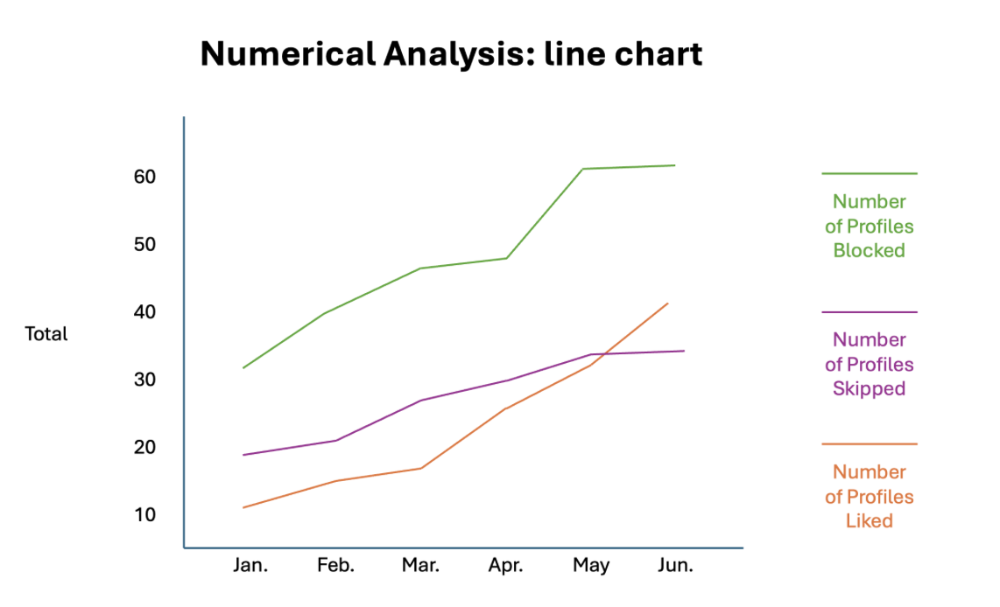
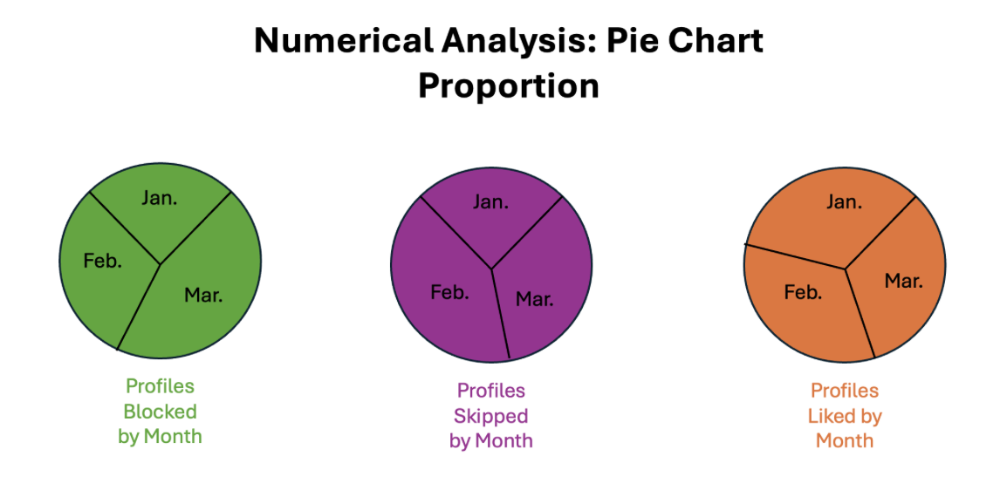
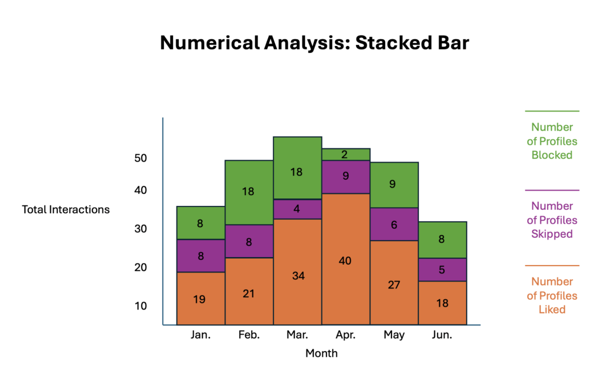
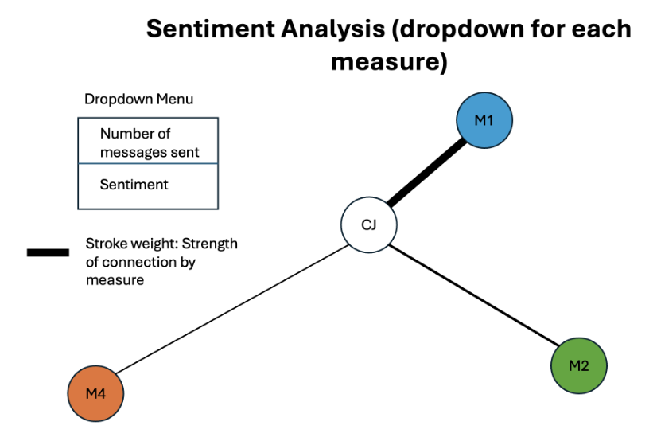
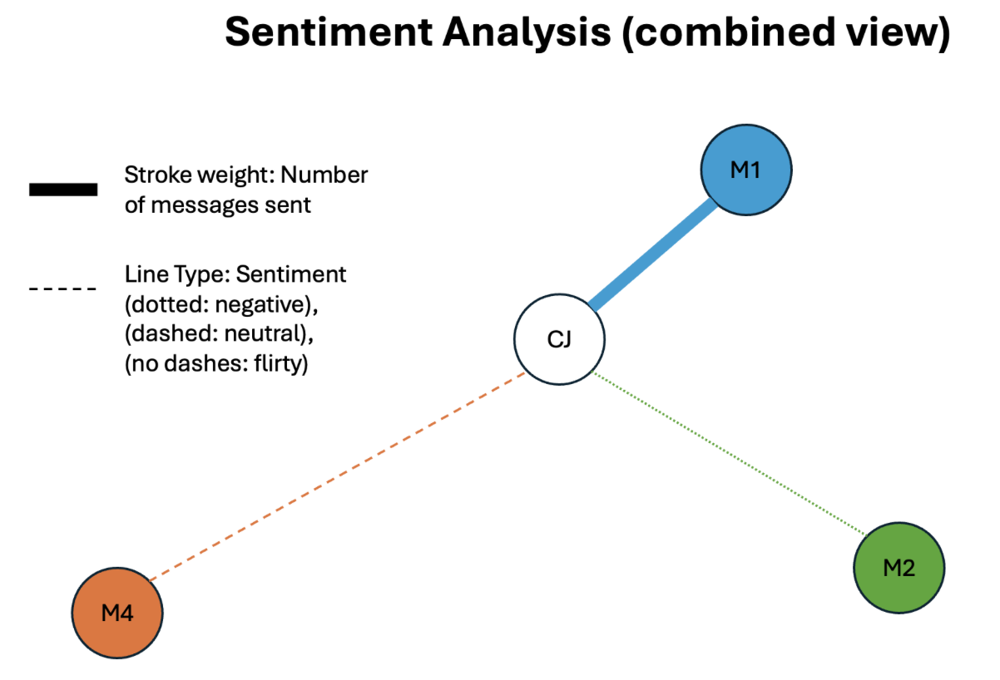
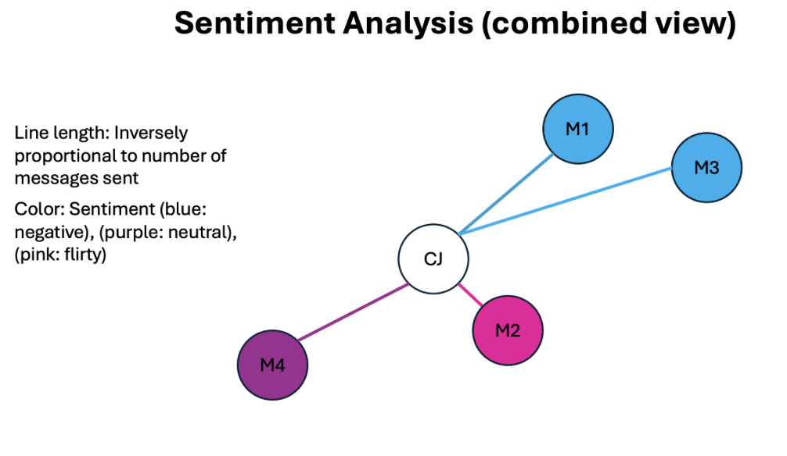
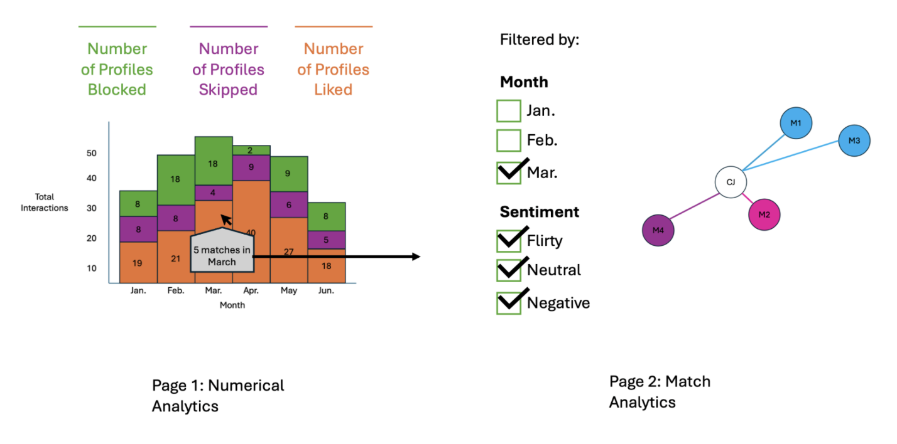
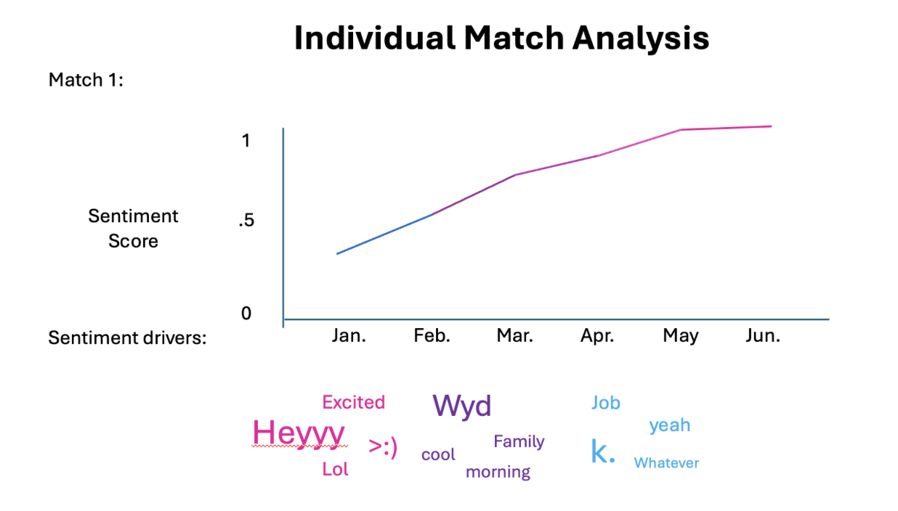

Caitlin Johnson and Timur Kasimov
jcaitlin@wustl.edu; ktimur@wustl.edu
Caitlin UID: 602924; Timur UID: 603011
We wanted something fun, practical, and personal that people are likely to use for themselves. This allows us to do simple numerical data analysis and also offers an opportunity to explore other areas like sentiment analysis (for messages with matches). Since Caitlin has been personally exploring the love scene around the city, she’s kindly agreed to examine her Hinge data for this project and gain personal dating insights – two birds with one stone, if you will.
The Hinge dating app allows users to export their data. We will be using data from Caitlin’s Hinge profile that includes the following anonymized artifacts of interest: 1) Messages sent to matches (timestamped, also includes text and match ID) 2) Likes sent (timestamped) 3) Blocks sent (timestamped) 4) Profiles skipped (timestamped)
We initially considered several approaches to visualize hinge's numerical data. The first option emphasized the growth over time of different types of interactions, while the second emphasized how types of interactions are distributed by month. The third provided a mixture of the first two, and may be preferred over the others for several reasons: 1) actual numbers are explicitly labeled, and do not require the viewer to make numerical estimations by eye, 2) the proportion of interactions by month can be interpreted like in the pie chart, but with the added benefit of knowing the actual numbers, 3) it allows us to easily see which months the user was most active, rather than needing to interpret the slopes of the lines in the line chart, and 4) we can add a direct interaction for the user to click on the liked profiles bar in each month and transition to another page where the matches received in that month are listed, which would make the visualizations even more interactive.

Option one: shows the growth of interactions over time. The user must interpret the slopes to figure out which months had more interactions.

Option two: shows the proportion of interactions by month. The user cannot know the exact number of interactions in each month, nor how the types of interactions compare with one another.

Option three: shows the number of interactions in each month and separates by type. Exact numbers are displayed and the user can directly infer which months had more activity.
We also considered several approaches to visualize hinge's sentiment data. The first option allows the user to filter which measure is shown, where the measure is encoded by line weight. Matches are individually colored. The second option shows all measure encodings at once, but might be visually straining for the user to look at. The third also shows all measure encodings at once, but chooses arguably more intuitive encodings which might alleviate problems from the second option (group sentiment by color, and match IDs closer to the center have had more interactions with the user).

Option 1: allows the user to filter which measure is shown, where the measure is encoded by line weight. Matches are individually colored. Note that if a user has many matches, some nodes might repeat colors despite belonging to different match IDs.

Option 2: No filtering used. Encodes two measures simultaneously: number of messages sent to a match and type of sentiment of those messages. This could be visually straining for the user to look at, despite allowing the user to compare measures immediately without using a dropdown. Once again, matches have different colors.

Option 3: No filtering used. Encodes two measures simultaneously: number of messages sent to a match and type of sentiment of those messages. Chooses encodings to alleviate visual strain while allowing the user to compare measures immediately without using a dropdown. Nodes are colored by sentiment instead of Match ID, so repeated colors serve a purpose and do not mislead the user into thinking two nodes have the same Match ID.
Combination: We can combine the two third options above in a way that lets the user click on areas of the bar chart to see match analytics automatically filtered by month. Adding filters to the sentiment analysis chart lets the user immediately see the overall analysis (which matches had good vs bad sentiment, which matches had the most interaction), while offering a method to filter based on what the user wants to see.

Users could also interact with the connection graph to see individual match reports by clicking on a node in the chart. This could show which words in the messages contributed to certain sentiments, as well as how a “sentiment score” developed over time. This would add transparency of how sentiment scores were determined and provide a sense of how a connection grew or got worse as the conversation progressed. A page visualizing information about a match might look like the visualization below:

*The above shows two visualizations: the first shows how the sentiment score for a match developed over time, and the second shows which words contributed the most to the current sentiment score.